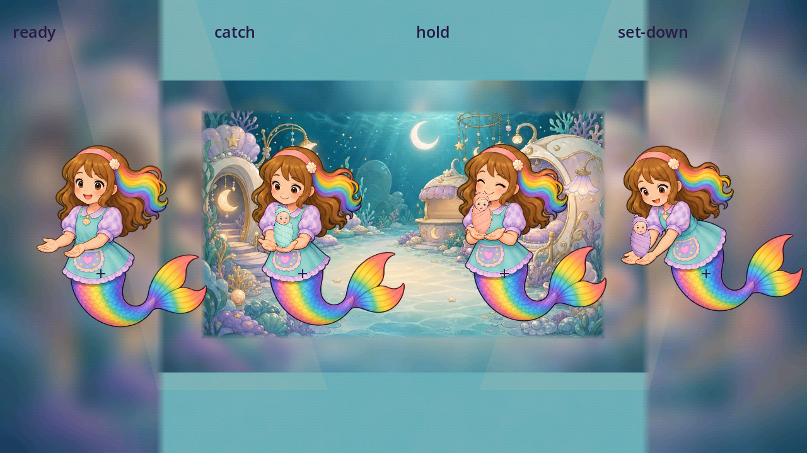

Job artwork audit and reversible refinements
Working review draft. The all-weak-item 4.5/5 target and final owner-approved report are still incomplete.
The sealed first pass contains 777 source images, 240 individual pose cells, 700 native diagnostic frames, and 124 phase, page, entrance and output opinions. It records 552 source priorities under the original inclusive threshold of 4.5 or lower. These figures describe the preserved baseline, not a new whole-game acceptance pass.
Read the complete first-pass library
Illustrated source, scene, pose and component library · Comprehensive written first-pass report · Eleven timed action studies
Source quality, use in a scene, physical action and sequencing are separate opinions. A good source image does not clear a detached hand, false contact, missing fold, unsupported pour or awkward transition.
Current nursery refinement
Live catch, hold, transfer, rest and safe-miss evidence preserves the earlier failed short traces and the longer successful input traces. Five intentional catches settle before FEED at both native widths. The enlarged surface, measured baby feet and five fixed resting slots repair specific alignment and ownership problems. Floating arms, body staging and Faron's physical safe-return remain below the visual/action target.
Fresh complete-body receiving, catching, holding and set-down poses fill the missing action coverage. Each has a provisional source opinion of 4.6/5. Native held-pose fixtures show the original babies resting on connected hands. Receiving cushions, release, real transitions and runtime integration remain pending.

The comparative fixture above is not intended game staging or a played animation. It preserves the complete native source and original baby artwork.
Earlier nursery generation and rejected-fit history remains available; no rejection was removed.
Normal job launches
The omitted birthday phase-override seam is repaired on this working branch. All 15 ordinary freeplay callers and all eight ordinary birthday callers now build their authored phases. The checks also preserve actual-main callback ownership, reject malformed overrides through the shared validator, and show no passive reward. These are setup and cancellation fixtures, not completed child gameplay.
Reproduced baseline failures · Current ordinary-caller checks
Outstanding action priorities
Every study below remains an individual drafting opinion. The broader library contains the other sources, poses, components, contexts and their refinement notes.
| Study | Score | Written evaluation |
|---|
| Initial pilot/candymaker-p02-circle-baseline-1280x720 | 2.3/5 | The child twists the ends of an already wrapped-looking diagram. Its flat pink centre has no readable paper enclosure or fold step. The owner-requested high-resolution wrapping workflow remains a repair priority. |
| Initial pilot/chef-p00-pour-baseline-1280x720 | 3.0/5 | The real held pour drains the pitcher and fills its receiver; the longer retry reaches5 progress. The tiny independent bowl/stream still differs from the painted room bowl and Roshan remains separated from the work. |
| Initial pilot/chef-p01-circle-baseline-1280x720 | 2.8/5 | Two real circular turns advance the phase and the recorded crank follows the finger angle. This does not establish a wrong spin direction. The small whisk rotates over a flat batter ellipse, with insufficient rim occlusion and visible hand/tool/bowl contact. |
| Initial pilot/doctor-p03-circle-baseline-1280x720 | 2.7/5 | Real circles advance the cast phase. The three straight horizontal strips grow toward the starfish but do not conform around the intended arm with clear rear/front overlap. Preserve the canonical five-arm patient during repair. |
| Initial pilot/farmer-p00-berries-baseline-1280x720 | 2.8/5 | The corrected integer-index driver earns five distinct object picks, mask31. Selected images dim in place; these pictures do not show discrete fruit detaching from a plant, being held or entering the basket. The earlier fourth press/release mismatch was a driver error, not a game failure. |
| Initial pilot/nursery-p01-catch-baseline-1280x720 | 3.0/5 | The longer trace earns five catches without misses; baby texture indices persist in the settled list. Source styling improves with fresh arms, but receiving support and the moving settled group require closer contact/placement review. The pillows in these traces are still the original flat ovals. |
| Initial pilot/nursery-p01-catch-candidate-1280x720 | 3.0/5 | The longer trace earns five catches without misses; baby texture indices persist in the settled list. Source styling improves with fresh arms, but receiving support and the moving settled group require closer contact/placement review. The pillows in these traces are still the original flat ovals. |
| Corrected/longer pilot/chef-p00-pour-baseline-1280x720 | 3.0/5 | The real held pour drains the pitcher and fills its receiver; the longer retry reaches5 progress. The tiny independent bowl/stream still differs from the painted room bowl and Roshan remains separated from the work. |
| Corrected/longer pilot/farmer-p00-berries-baseline-1280x720 | 2.8/5 | The corrected integer-index driver earns five distinct object picks, mask31. Selected images dim in place; these pictures do not show discrete fruit detaching from a plant, being held or entering the basket. The earlier fourth press/release mismatch was a driver error, not a game failure. |
| Corrected/longer pilot/nursery-p01-catch-baseline-1280x720 | 3.0/5 | The longer trace earns five catches without misses; baby texture indices persist in the settled list. Source styling improves with fresh arms, but receiving support and the moving settled group require closer contact/placement review. The pillows in these traces are still the original flat ovals. |
| Corrected/longer pilot/nursery-p01-catch-candidate-1280x720 | 3.0/5 | The longer trace earns five catches without misses; baby texture indices persist in the settled list. Source styling improves with fresh arms, but receiving support and the moving settled group require closer contact/placement review. The pillows in these traces are still the original flat ovals. |
Refresh when the game changes
Run python -B tools/refresh_job_artwork_status.py to compare all baseline source hashes, capture dependencies and game scripts with current bytes. The tool flags changed art, changed code, unreviewed literal bindings and unresolved templates. It preserves every original score and capture. --check verifies the saved status without writing.
Current result: REVIEW_REFRESH_REQUIRED. The career world and nursery catch capture dependencies changed. The broader script watch also records the Dolls renderer change. No baseline source artwork changed. The new runtime candidates use separate paths.
Exact current source status and review triggers
Coverage and acceptance still open
- Finish every weak live source, object, pose, contact and action sequence; source-only scores do not meet the complete requirement.
- Review normal room entry and every played job substep, then compare training and story variants.
- Expand native context coverage to Day One cleaning under the stated all-job-days assumption. This coverage is pending and is not represented by the Day Two baseline counts.
- Complete supported aspect, Mobile performance, device and child review where required.
- Present the finished comprehensive report for owner approval. No final approval, finding closure or release is claimed.
Revision-bound packet manifest · Remote publication receipt when published